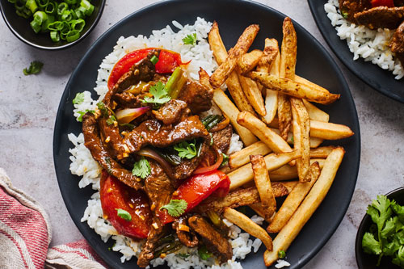

Lomo Saltado

Description
Yummy delicious peruvian plate of tender slices of seared stir fried beef, onions, tomatoes, french fries served with a side of rice. This plate will defintely have you salivating like a perro! The peruvian lomo saltado is a fusion of chinese stir fry with the inclusion of french fries. All the ingredients come together to make an absolutely delecious sauce that combines perfect with french fries and rice.
Lomo saltado translates directly to "stir-fried beef". It is no surpise that this dish was highly influenced by the Chinese as many Chinese settlers arrived in Peru in the late 19th and early 20th century. If you are a fan of Chinese stir fry this dish will not disappoint! Let's get cooking!
Ingredients
- 2 tablespoons vegetable oil
- 1 lb sirloin steak
- salt
- black pepper
- 1/2 red onion
- 1 medium tomato
- 2 cloves garlic
- 1 tablespoon aji amarillo paste
- 2 tablespoons soy sauce
- 1 tablespoon white vinegar
- 1 tablespoon fresh cilantro
- 1 lb french fries
- white rice
Steps
- Heat 1 tablespoon of oil in a large pan over high heat. Add the steak, season with salt and pepper, and cook until browned, 5-6 minutes. Remove from the pan
- Heat the remaining tablespoon of oil in the same pan, then add the red onion and cook for about 5 minutes, until softened and browned. Add the tomato, garlic, and aji amarillo paste, and cook for another 5-7 minutes, until the tomatoes have released some of their juices, but are still intact
- Add the soy sauce and vinegar and stir to combine, let cook for 1 minute
- Add the steak, fries, and cilantro. Toss gently to coat the fries in the sauce
- Serve with rice, if desired